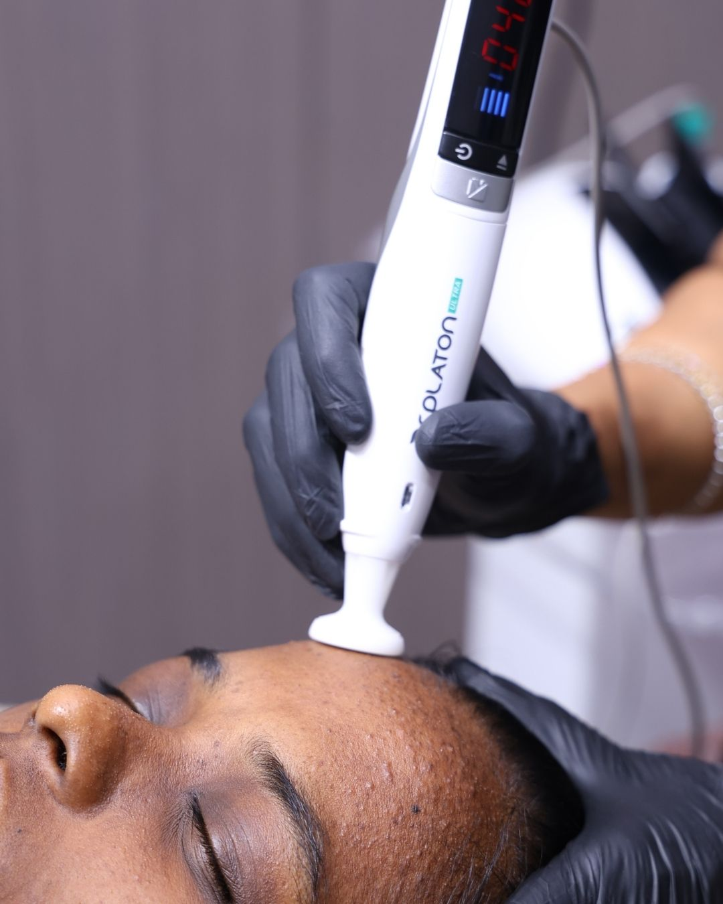

Hair
PRP vs GFC for hair loss — which one should you choose?
Both use your own blood. They are not the same procedure, and one is measurably more concentrated than the other. Here is how to decide.
Read →Karur's Most Trusted Dermatologist
Founded in 2010 by Dr. Kavitha, Skin Trust Hospital has treated over 2 lac patients and is across its 40+ offerings.

Our treatment categories
Redefining aesthetic excellence. Delivering bespoke transformations for skin, hair, and body, backed by the trust of thousands.
From diagnosing why your hair is falling to regrowing what you have lost — every protocol starts with trichoscopy and blood work, not a sales pitch.
Teenage acne and adult hormonal acne are different problems. So are ice-pick scars and rolling scars. The treatment changes with the diagnosis — not the other way round.
Maintenance treatments for radiance, texture and even tone — formulated for Indian skin that battles Tamil Nadu's sun, humidity and pigmentation year-round.
The goal is to look rested, not treated. Conservative dosing, natural movement, and energy-based lifting that tightens without surgery or downtime.
Medical grade lasers operated by dermatologist - not technicians. Every setting calibrated for Indian skin types to minimise pigmentation risk.
Clinical dermatology and minor surgery in a sterile hospital set-up — from mole removal to vitiligo grafting and phototherapy.
Why Karur trusts Dr. Kavitha
At many clinics, a doctor recommends the treatment while someone else performs it. Here, your dermatologist is with you from consultation to procedure, ensuring consistency at every step.
Dr. Kavitha personally performs all advanced procedures, including laser treatments, injectable procedures, and surgical excisions, ensuring continuity of care from consultation through treatment and follow-up.
Hair fall gets a trichoscopy and blood work before treatment is discussed. Pigmentation gets a proper cause mapped. You will never be sold six sessions of something you do not need.
GFC kits, Botox vials, fillers and PRP tubes are sourced through authorised channels. You can ask to see the product, the seal and the batch number before anything enters your skin.
Session cost, expected number of sittings and what happens if results are slower than expected — all discussed and documented before you pay a single rupee.
Higher Fitzpatrick types pigment easily after aggressive laser settings. Protocols at Skin Trust are tuned for Tamil Nadu skin — not copied from Western manufacturer defaults.
Single-use needles and cannulas, autoclaved instruments, a dedicated procedure room, a separate minor OT and strict infection-control protocols — Because patient safety guides every detail of our clinical environment.

Meet your dermatologist
As Karur’s first female dermatologist and the founder of Skin Trust Hospital, Dr. Kavitha K. B. has spent over two decades making specialised skin and hair care more accessible, ethical, and patient-focused.
Dr. Kavitha
In the procedure room
Every device we use is listed by name, not because it's impressive, but because you deserve to know exactly what's being used for your treatment.
Patient results
Photographs taken in the same room, same light, same distance. No filters, no retouching, no borrowed stock images — only real outcomes from real patients at Skin Trust Hospital.
Male, 29 — diffuse thinning at the crown. Six PRP sessions combined with medical management over six months.
Female, 24 — rolling and boxcar scars across both cheeks. MNRF combined with subcision over five sessions.
Female, 36 — melasma across cheekbones. Chemical peels, laser toning and strict sun protection over eight sessions.
Photographs shared with written patient consent. Individual results vary with age, skin type, severity and adherence to the treatment plan — no outcome is guaranteed.
The Skin Trust promise
Most Trusted Dermatology and
Skin Aesthetic Clinic in Karur, Tamilnadu
Patients drive in from Karur town, Kulithalai, Aravakurichi, Krishnarayapuram, Manmangalam — and increasingly from Trichy and Namakkal. Below is what a few of them wrote, unedited.
She explained exactly why my hair was falling before suggesting a single treatment. Three other places just handed me a package without any diagnosis.
I had acne for six years. Dr. Kavitha was the first doctor to actually check my hormones. Six months later my skin is genuinely calm for the first time.
Mole removal took fifteen minutes and the scar is barely visible. Clean set-up, everything sterile, no drama. Very experienced and skilled doctor.
Patient stories
Visit us
Book an appointment
Mon–Sat 9:30 AM–7:30 PM · No. 28, Chairman Ramanujan Street, Karur 639001